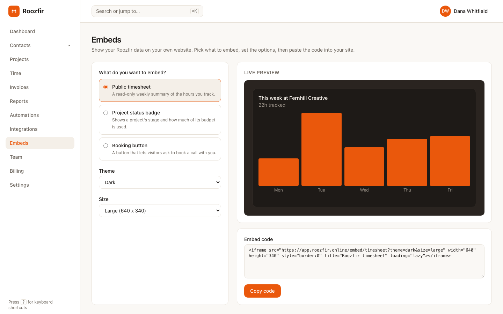
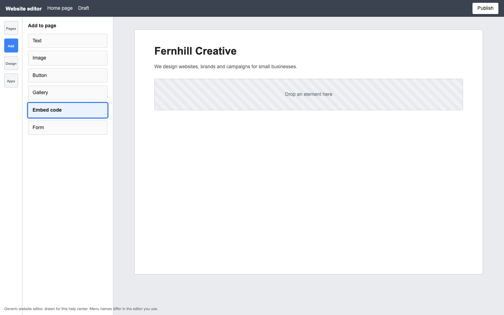

Help Center » Putting Roozfir on your website
How to embed your public timesheet on Wix
Show your weekly hours on your Wix site. You copy a small piece of code from Roozfir and paste it into your page.
- In Roozfir, click Embeds in the left-hand menu.
- Under What do you want to embed?, choose Public timesheet. The preview on the right shows what visitors will see.

The Embeds page with Public timesheet selected and a live preview - Choose a Theme (Light or Dark) and a Size.

The embed options set to the dark theme and the large size - Click Copy code. A message confirms the code is on your clipboard.

The Embeds page after clicking Copy code - In Wix, open your site in the Editor and go to the page where the timesheet should appear.
- Click Add Elements on the left, choose Embed Code, then Embed HTML.

A website editor with the Add menu open and Embed code highlighted - Click Enter Code, make sure Code is selected, and paste what you copied.

The embed code window with the Roozfir code pasted in - Click Update, drag the box where you want it, and click Publish.

The page in the editor showing the Roozfir timesheet
Tip: The screenshots of the website editor are an illustration. Your editor will look a little different.